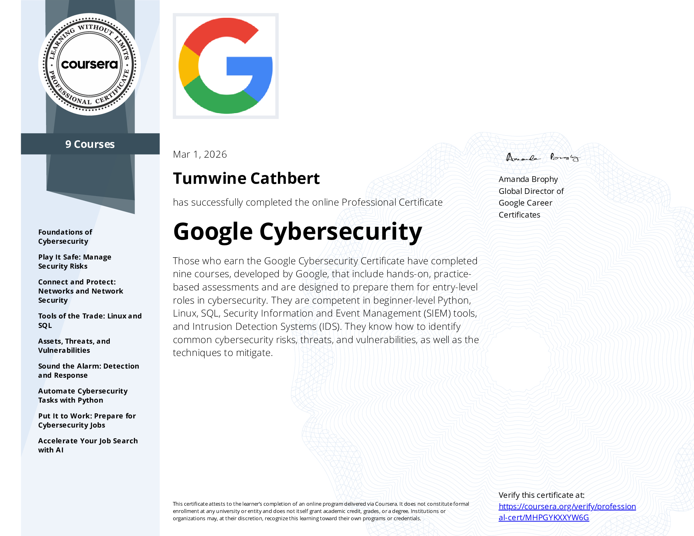
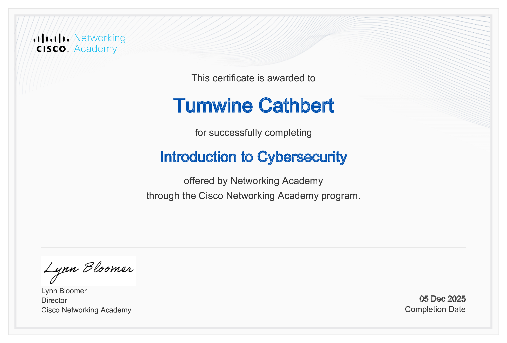
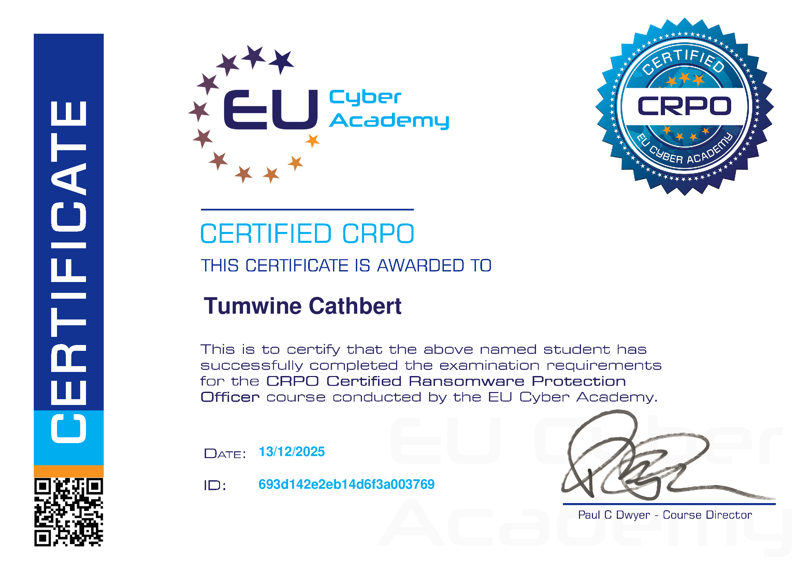
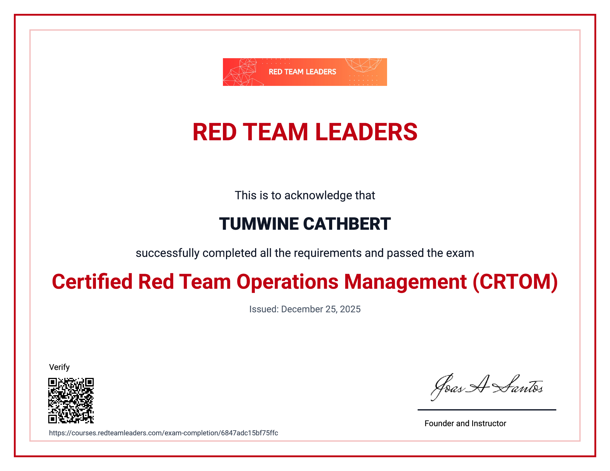

Tumwine Cathbert
Google Certified Cybersecurity Professional focused on continuous learning, threat awareness, and strengthening digital defenses. I’m driven by curiosity — studying both emerging attack techniques and evolving protection strategies to better understand how systems can be secured. Currently building hands-on skills toward SOC and security operations roles.
Core Focus
Security Operations
Log analysis, threat detection, incident response fundamentals, SIEM exposure.
Risk & Governance
ISO 27001 foundations, security controls, compliance awareness.
Cloud & Network Security
Network fundamentals, access control, vulnerability concepts.
Certifications

Google Cybersecurity Professional Certificate
Covered security operations, Linux, SQL, SIEM tools, threat detection, and incident response workflows.

Cisco Introduction to Cybersecurity
Foundational understanding of threats, vulnerabilities, and defense mechanisms.
ISO 27001 – SkillFront
Focused on information security management systems and risk-based security controls.

Certified Ransomware Protection Officer
Defense strategies against ransomware threats and incident mitigation practices.

Red Team Leaders Certification
Exposure to offensive security methodologies and attacker mindset analysis.